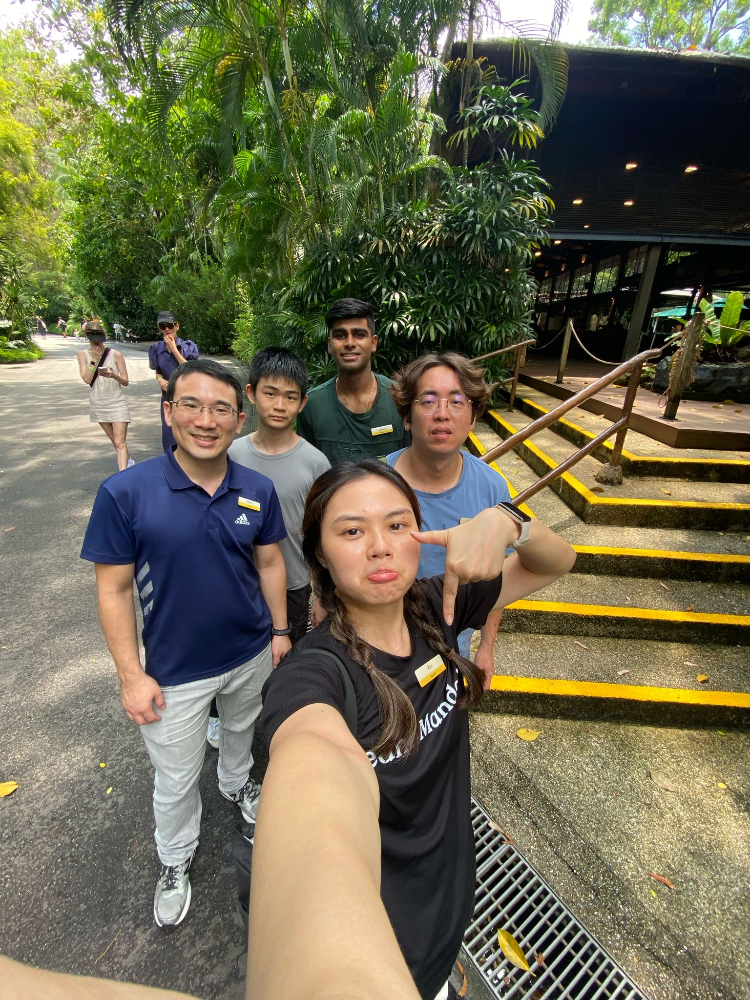
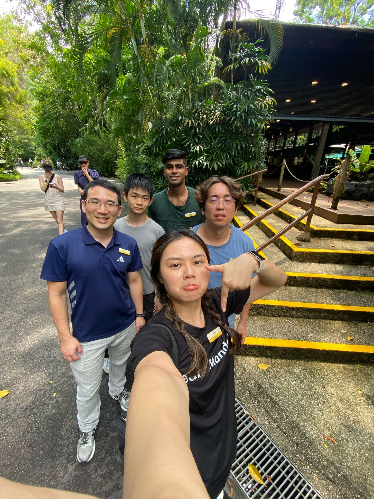

👋 Welcome to My Internship Portfolio
Showcasing my Journey with Mandai Wildlife Group — where AI meets conservation.
 

I'm incredibly excited to welcome you to my internship e-portfolio — a creative documentation of my current journey at the Transformation Office of Mandai Wildlife Group, where I served as an Innovation and Technology Management Associate Trainee. This experience wasn’t just an internship; it was a deep dive into the intersection of technology, business process exploration, conservation, and purpose-driven innovation.
I had the privilege to work on projects that spanned AI automation, digital transformation, prompt engineering, workflow optimization, and stakeholder engagement. From designing and deploying bots using Power Automate to crafting executive-ready dashboards in Excel, every week came with hands-on challenges that bridged theory with impact.
One of the proudest milestones was producing the Townhall “MyProject100K” video — a company-wide townhall video feature that involved storyboarding, filming, editing, and collaborating across multiple departments including HR, Park Operations, and Veterinary. I also conducted field research, participated in Zebra and Giraffe feeding sessions, and conducted process mapping diagrams using Miro to better understand ground operations.
This internship allowed me to explore the human side of technology: solving real-world problems that directly impact daily work routines. My projects were not only technical — they were contextual, user-centered, and deeply collaborative. It affirmed my aspiration to become a versatile RPA Engineer and AI Engineer who builds with empathy, efficiency and intention.
This portfolio is a living reflection of the skills I honed, the values I embraced, and the outcomes I delivered. I hope it gives you a clear sense of who I am, what I do, and how I aspire to make a meaningful impact through tech.
🕒 Internship Journey Timeline
Week 1
Onboarding & Video Planning
Week 3
GenAI Analysis + Procurement Bot
Week 5
Filming + More Automation
Week 8
Procurement Bot Development + Deployment
🌱 What This Internship Taught Me
“Real-world experience is where theory becomes transformation. Digital transformation has taught me on how to be more agile, customer-centric, and data-driven. It emphasises the need for continuous learning, adaptation, and embracing change as a core competency. It also highlights the importance of culture change, process optimisation, and leveraging technology to improve efficiency and create new value for customers and stakeholders.”
Let's Connect & Build Something Awesome!
Drop me a line — whether you're curious, inspired, or just wanna vibe about AI, automation, or sustainability.